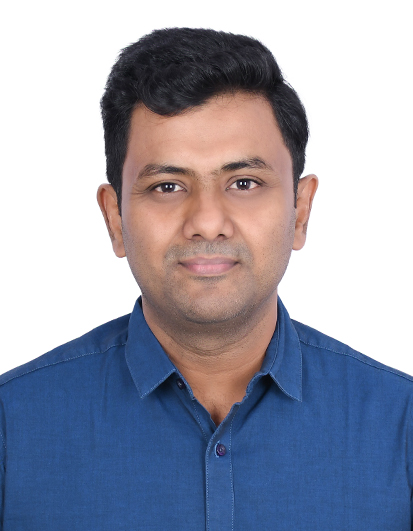

Harinarayanan K

Senior Project Manager| Aspiring Technical Program Manager | PMP | CSM | Azure Certified
Bangalore, India | (+91) 9972727336 | khari82@gmail.com | LinkedIn Profile
Summary
Senior Project Manager with 15+ years of experience in software engineering and project delivery, transitioning into Technical Program Management. Proven ability to lead global teams, drive agile practices, and deliver enterprise software solutions aligned with business goals.
Experience
- Honeywell International, Bangalore
Senior Software Engineering Lead
2013 - Present
- Led cross-functional global teams across engineering, operations, and product to deliver complex software projects on schedule and within scope
- Spearheaded agile transformation initiatives, improving delivery predictability and stakeholder satisfaction by 30%.
- Collaborated with program managers and product owners to align technical execution with business goals.
- Collabera Technologies, Bangalore
Senior Technical Lead 2012 - 2013
- Translated customer requirements into actionable engineering tasks, increasing sprint velocity by 20%.
- Ensured adherence to approved processes, tools, and technology, accelerating software development and verification.
Skills
- Project & Program Management: Agile, Scrum, Jira, Confluence, Project planning and Execution, Risk Mitigation, Stakeholder Engagement
- Technical Skills: Microsoft Azure, SQL, PLSQL, Python, Unix, DevOps, Shell Scripting, Tableau, Control-M, REST/SOAP APIs
Certifications
- Project Management Professional (PMP)
- Certified Scrum Master (CSM)
Others
My Contact
Hobbies